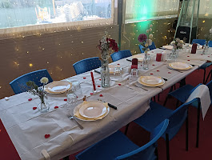
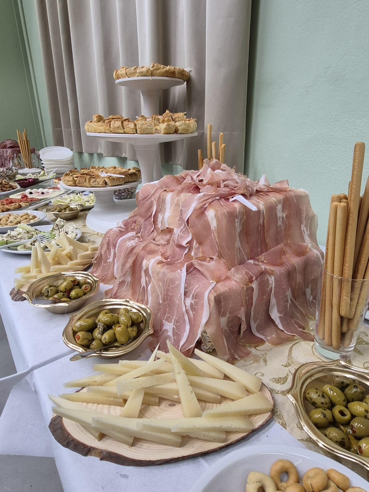

Uno spazio per stare bene.
Dalla tavolata con gli amici alle occasioni importanti: qui ogni incontro trova il suo posto.
Un ambiente fatto
per condividere.
Al Semaforo la convivialità è protagonista. Prepariamo gli spazi per accogliere famiglie, gruppi di amici e serate da festeggiare, con l'attenzione di un locale a conduzione familiare.
Per feste o cene di gruppo, raccontaci cosa hai in mente e verificheremo insieme la soluzione più adatta.
Organizza la tua serata

Le serate più belle
all'aperto.
Nella bella stagione, il giardino si illumina e diventa il luogo ideale per una cena in compagnia. Un'atmosfera semplice e accogliente, tra luci calde e tavoli da condividere.
Guarda le fotografieLe tue occasioni speciali.
Compleanni, ritrovi e cene in compagnia. Contattaci per organizzare un momento da ricordare.

Cene e ricorrenzeUn tavolo preparato per celebrare insieme.

Buffet e proposteLe nostre preparazioni per le occasioni speciali.